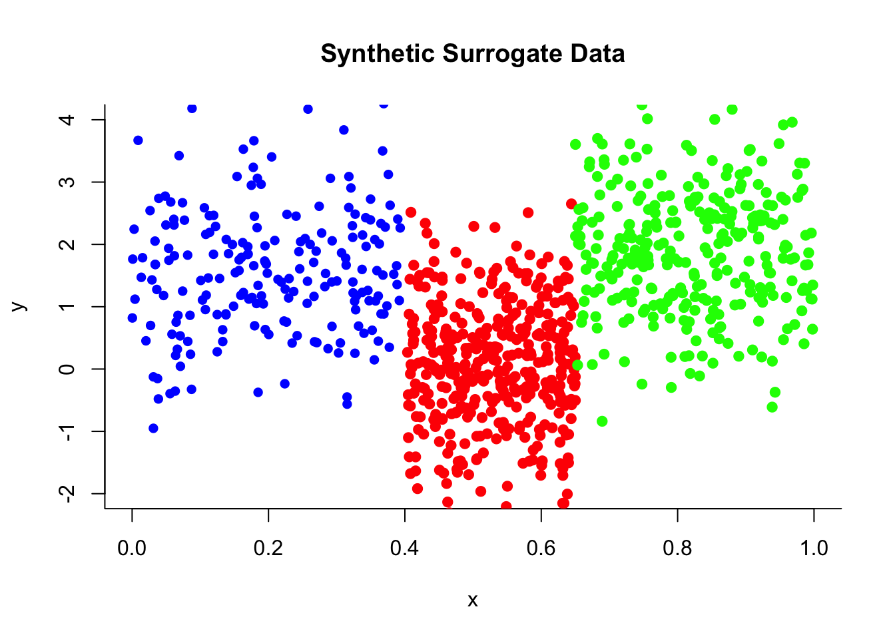
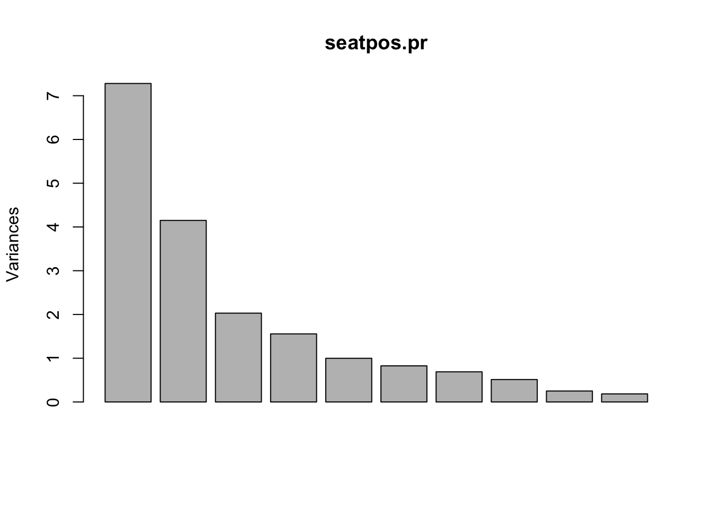
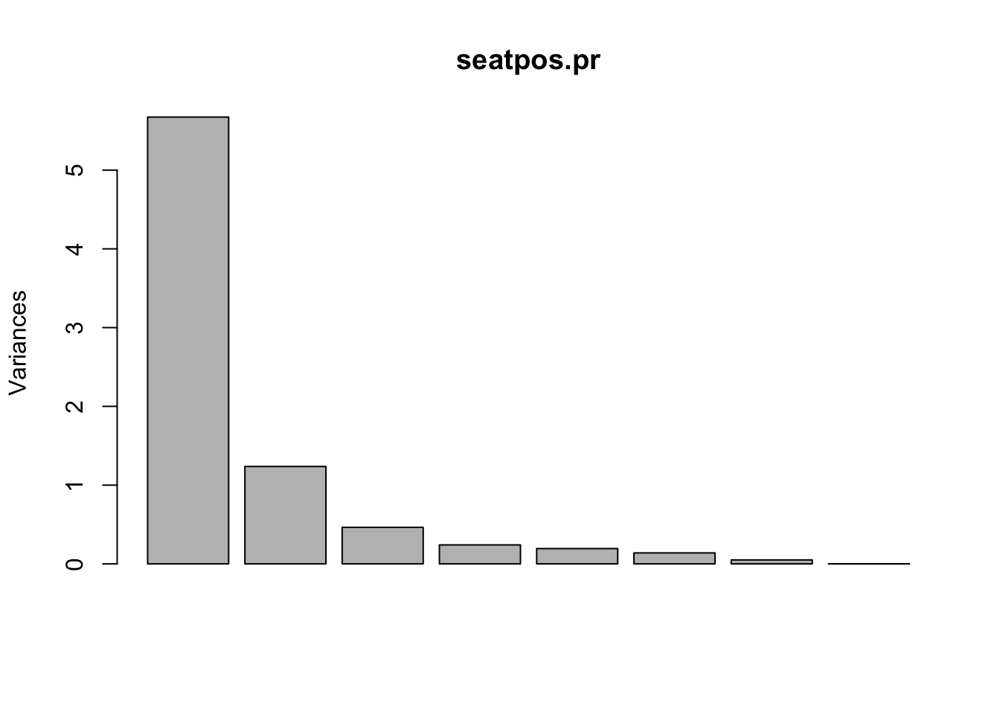
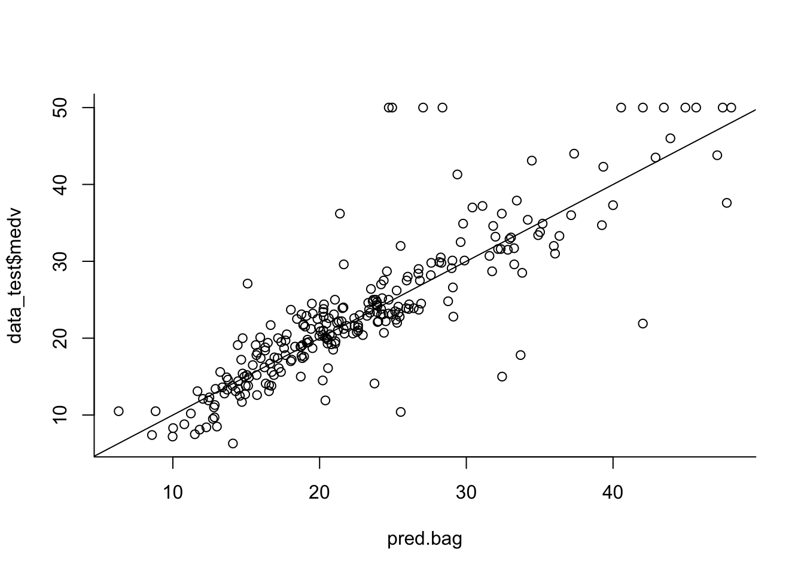

Chapter 4 Multiple Linear Regression
4.1 Exploring Data With Multiple Predictor Variables
4.1.1 Pairs Plot (Scatterplot Matrix)
To see how any pairs of variable in a data are related use pairs(data). For an example with carSales data from Section 3.6,
#can make it symmetric on diagonal by leaving as `pairs(carSales)`
pairs(carSales, lower.panel = NULL)
The upper panel here can be customised by making a new function
Example from Section 3.6
# Customize upper panel
upper.panel <- function(x, y){
points(x,y, pch=19, col=4)
r <- round(cor(x, y), digits=3)
txt <- paste0("r = ", r)
usr <- par("usr"); on.exit(par(usr))
par(usr = c(0, 1, 0, 1))
text(0.5, 0.9, txt)
}
pairs(carSales, lower.panel = NULL,
upper.panel = upper.panel)
Example from Practical 2
panel.cor <- function(x, y){
usr <- par("usr"); on.exit(par(usr))
par(usr = c(0, 1, 0, 1))
r <- round(cor(x, y), digits=2)
txt <- paste0(" ", r)
text(0.5, 0.5, txt, cex = 0.8)
}
# Customize upper panel
upper.panel<-function(x, y){
points(x,y, pch = 19)
}
# Create the plots
pairs(fat1,
lower.panel = panel.cor,
upper.panel = upper.panel)

4.2 Basics of Building an MLR Model (Including Transformations)
Build a Model With Specific Predictors
model <- lm(Y ~ X1 + X2 + ... + Xn, data=data)Build a Model With All Predictors
model <- lm(Y ~ ., data=data)Build a Model With Specific Predictors Removed
model <- lm(Y ~ . - X1 - X2, data=data)Example Including Transformations
model <- lm(Y ~ X1 + X2*X3 + log(X4) + I(X5^2), data=data)Note that X2*X3 includes the predictors X2, X3 and their product X2 x X3.
Inference is much the same as with SLR.
4.3 Multicollinearity Detection and VIF
To calculate VIF value for each predictor in a model simply use vif() function from car library.
library(car)
vif(reg)## Age Miles
## 3.907129 3.9071294.4 Model Selection
The following subsection follows closely to Practical Demonstration 5.4. Most examples will be from there.
4.4.1 Best Subset and Forward/Backward Stepwise Selection (Using Selection Criteria)
Best Subset Selection is done using regsubsets() function from leaps library.
library(leaps)#function for best subset selection
best = regsubsets(Salary ~ ., Hitters, nvmax=19)
results = summary(best)
names(results) #gives the names of the predictors chosen by best subset selection## [1] "which" "rsq" "rss" "adjr2" "cp" "bic" "outmat" "obj"nvmax=19 specifies that you want all 19 models and not just up to the best one.
Data you can extract from output of regsubsets()
RSS = results$rss
r2 = results$rsq
Cp = results$cp
BIC = results$bic
Adj_r2 = results$adjr2
cbind(RSS, r2, Cp, BIC, Adj_r2)## RSS r2 Cp BIC Adj_r2
## [1,] 36179679 0.3214501 104.281319 -90.84637 0.3188503
## [2,] 30646560 0.4252237 50.723090 -128.92622 0.4208024
## [3,] 29249297 0.4514294 38.693127 -135.62693 0.4450753
## [4,] 27970852 0.4754067 27.856220 -141.80892 0.4672734
## [5,] 27149899 0.4908036 21.613011 -144.07143 0.4808971
## [6,] 26194904 0.5087146 14.023870 -147.91690 0.4972001
## [7,] 25906548 0.5141227 13.128474 -145.25594 0.5007849
## [8,] 25136930 0.5285569 7.400719 -147.61525 0.5137083
## [9,] 24814051 0.5346124 6.158685 -145.44316 0.5180572
## [10,] 24500402 0.5404950 5.009317 -143.21651 0.5222606
## [11,] 24387345 0.5426153 5.874113 -138.86077 0.5225706
## [12,] 24333232 0.5436302 7.330766 -133.87283 0.5217245
## [13,] 24289148 0.5444570 8.888112 -128.77759 0.5206736
## [14,] 24248660 0.5452164 10.481576 -123.64420 0.5195431
## [15,] 24235177 0.5454692 12.346193 -118.21832 0.5178661
## [16,] 24219377 0.5457656 14.187546 -112.81768 0.5162219
## [17,] 24209447 0.5459518 16.087831 -107.35339 0.5144464
## [18,] 24201837 0.5460945 18.011425 -101.86391 0.5126097
## [19,] 24200700 0.5461159 20.000000 -96.30412 0.5106270Plotting To Understand Best Subset Selection
#Plots RSS and R-square as you add more predictors
par(mfrow = c(1, 2))
plot(RSS, xlab = "Number of Predictors", ylab = "RSS",
type = "l", lwd = 2)
plot(r2, xlab = "Number of Predictors", ylab = "R-square",
type = "l", lwd = 2)
Number of predictors in optimal model under different selection criteria
which.min(Cp)## [1] 10which.min(BIC)## [1] 6which.max(Adj_r2)## [1] 11Example Plot For How Selection Criteria Change
par(mfrow = c(1, 3))
plot(Cp, xlab = "Number of Predictors", ylab = "Cp",
type = 'l', lwd = 2)
points(10, Cp[10], col = "red", cex = 2, pch = 8, lwd = 2)
plot(BIC, xlab = "Number of Predictors", ylab = "BIC",
type = 'l', lwd = 2)
points(6, BIC[6], col = "red", cex = 2, pch = 8, lwd = 2)
plot(Adj_r2, xlab = "Number of Predictors", ylab = "Adjusted RSq",
type = "l", lwd = 2)
points(11, Adj_r2[11], col = "red", cex = 2, pch = 8, lwd = 2)
Built-in Plot for Criteria
Top row is the best model under the criteria and worst is at bottom
plot(best, scale = "Cp")
The options for scale are "bic", "Cp", "adjr2" and "r2".
Extracting Coefficients for Best Model (at a specific number of predictors)
coef(best, 10) #Cp## (Intercept) AtBat Hits Walks CAtBat CRuns
## 162.5354420 -2.1686501 6.9180175 5.7732246 -0.1300798 1.4082490
## CRBI CWalks DivisionW PutOuts Assists
## 0.7743122 -0.8308264 -112.3800575 0.2973726 0.2831680The number here which is k=10 corresponds to model M_k. We found this from which.min(Cp).
4.4.2 Best Subset Selection (Using Validation)
‘regsubsets()’ does not have a built-in function to do best subsey selection using validation so we use a custom function (copy and paste).
predict.regsubsets = function(object, newdata, id, ...){
form = as.formula(object$call[[2]])
mat = model.matrix(form, newdata)
coefi = coef(object, id = id)
xvars = names(coefi)
mat[, xvars]%*%coefi
}objectshould be the result of a call toregsubsetsnewdatashould be data frame with data from validation set inidspecifies we want to use the model fromobjectwithidpredictors
Splitting Data into Training and Validation
As a rough guide, split the data approximately 2:1 for Training:Validation.
dim(Hitters)
training.obs = sample(1:263, 175)
Hitters.train = Hitters[training.obs, ]
Hitters.test = Hitters[-training.obs, ]Best Subset Validation
The regsubsets call:
best.val = regsubsets(Salary ~ ., data = Hitters.train, nvmax = 19)Iterate through every number of predictors and calculate the MSE between prediction and observed (from validation set).
val.error <- c()
for(i in 1:19){
pred = predict.regsubsets(best.val, Hitters.test, i)
val.error[i] = mean((Hitters.test$Salary - pred)^2) #MSE
}
val.error #stores 19 models validation MSE## [1] 127332.58 97251.50 117458.83 115034.58 110575.99 103496.79 105209.58
## [8] 89951.79 101429.89 92369.04 99163.37 98901.00 101441.58 95544.59
## [15] 94906.73 98021.33 97046.32 97132.92 96254.81Index with smallest MSE is best number of predictors
which.min(val.error) ## [1] 8Inference
After choosing optimal model with best subset selection using a validation set, before inference, you must train the model in the entire data set.
coef(best.val, 10) # Check which variables to use in the lm.## (Intercept) AtBat Hits Runs RBI Walks
## 226.7356041 -2.5174024 8.8813884 -5.3956785 3.3339115 7.3909636
## Years CRuns CWalks DivisionW PutOuts
## -21.0918375 1.7590349 -1.0556631 -134.4648071 0.1553068ls10 = lm(Salary ~ AtBat + Hits + Runs + Walks + CAtBat + CRuns + CRBI + CWalks + Division + PutOuts, data = Hitters)Usual inference can follow.